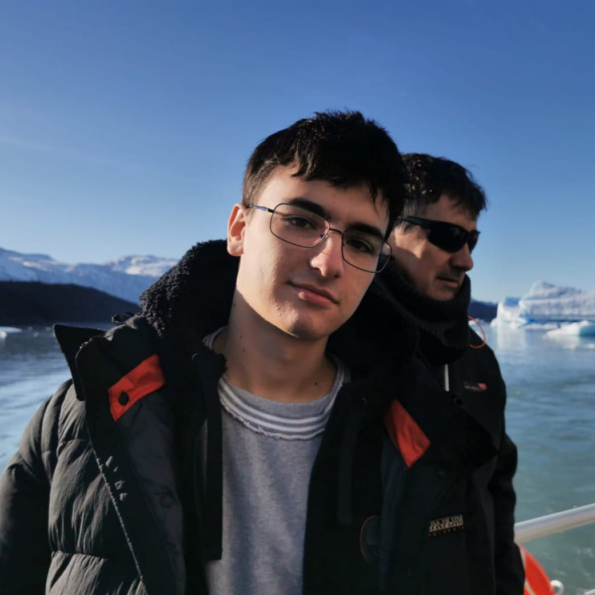

Jan Capdevila Moizé
Game programmer working in Unity and C#. I study Video Game Design and Production at TecnoCampus and build games that are fun to play and clean to read.

Projects
Open a game to see what I built and how.
Skills
Main
- Unity
- C#
Also used
- Lua
- C++ (learning)
- Unreal Engine (basics)
Tools
- Git and GitHub
- Visual Studio
3D and art
- 3ds Max
- Mudbox
- Substance Painter
About me
I love creating interactive experiences that players enjoy, and I'm always looking to learn more and improve my skills. Most of my work is in Unity and C#, from university projects to game jams, and I'm now learning C++ to understand what happens under the engine.
Bachelor's Degree in Video Game Design and Production
TecnoCampus (Universitat Pompeu Fabra), Mataró